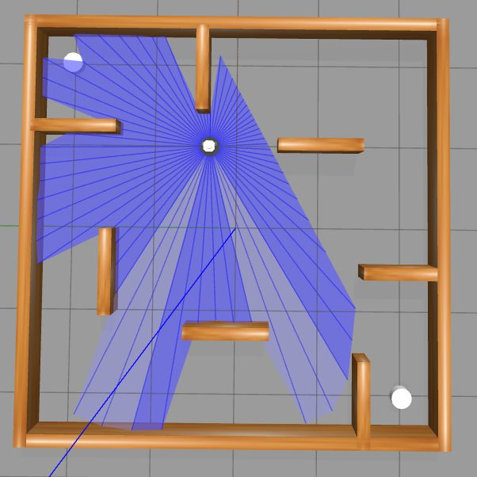
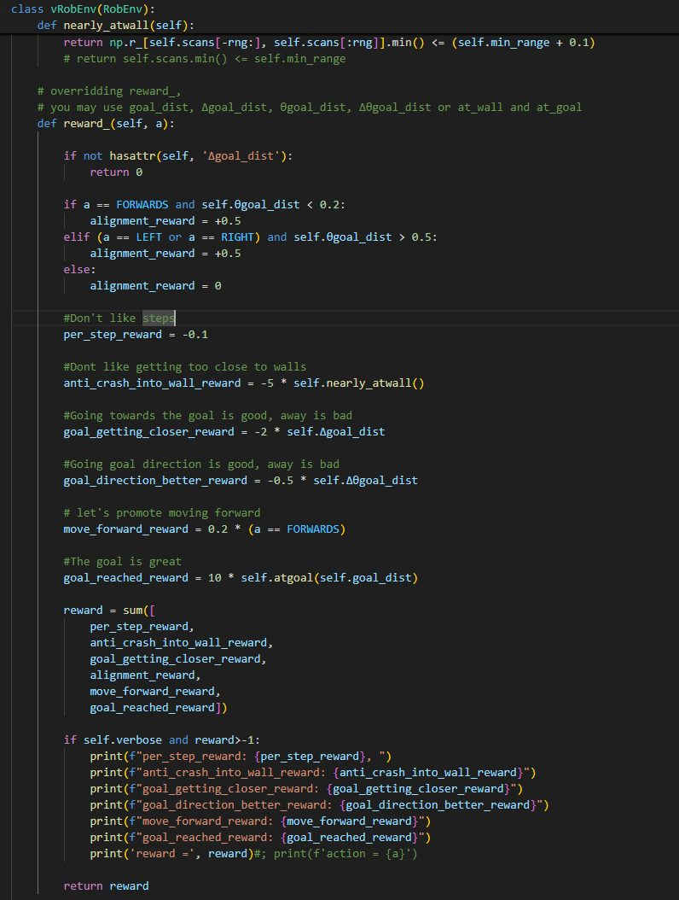
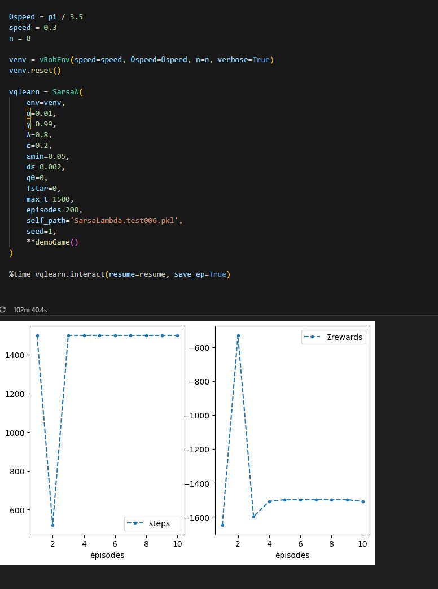

Assessment
TurtleBot reinforcement learning.
I worked with a simulated robot environment, ROS/DDS connectivity, laser-scan state and value-based reinforcement-learning approaches.
OCOM5205M / Robotics
The robotics assessment used ROS, Gazebo and TurtleBot-style simulation to explore reinforcement learning for navigation: state representation, laser-scan features, reward design, action-value methods and the very real pain of simulation plumbing.
This was the taught module that most obviously fed into my later robot-learning work. It made reinforcement learning feel less like a tidy equation and more like a system with sensors, middleware, state, reward hacks and failure modes.

Assessment
I worked with a simulated robot environment, ROS/DDS connectivity, laser-scan state and value-based reinforcement-learning approaches.
Representation
Laser readings had to become usable features. That forced the key robotics question: what does the robot know, and in what form?
Reward
Reward design was a practical lesson in specification: the agent optimises what you reward, not what you quietly hoped it understood.
Lesson
The module made clear how much hidden engineering sits around the learning algorithm: simulation speed, middleware, resets, logging and repeatable experiments.


